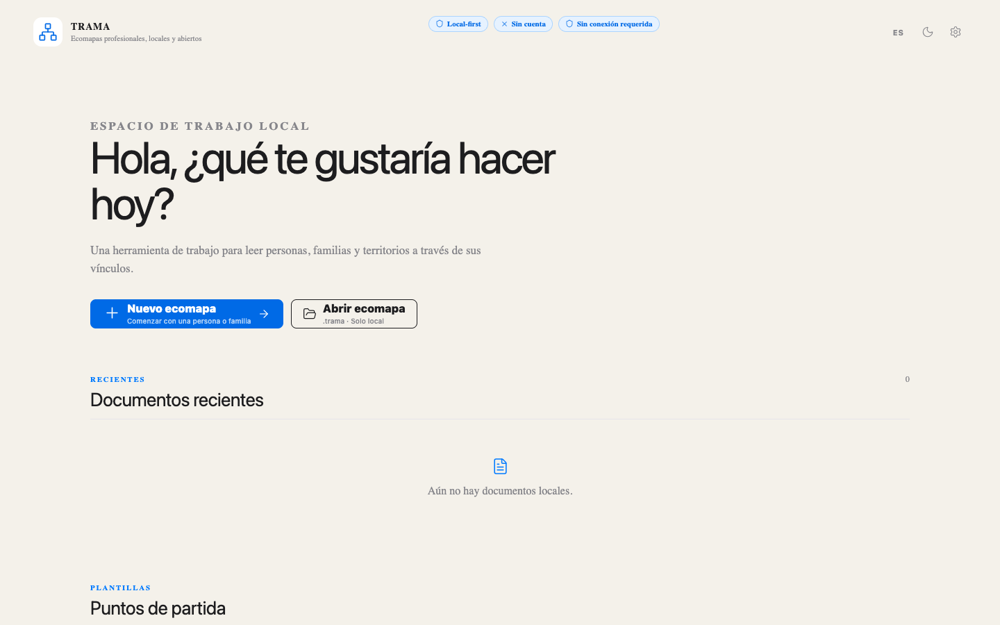
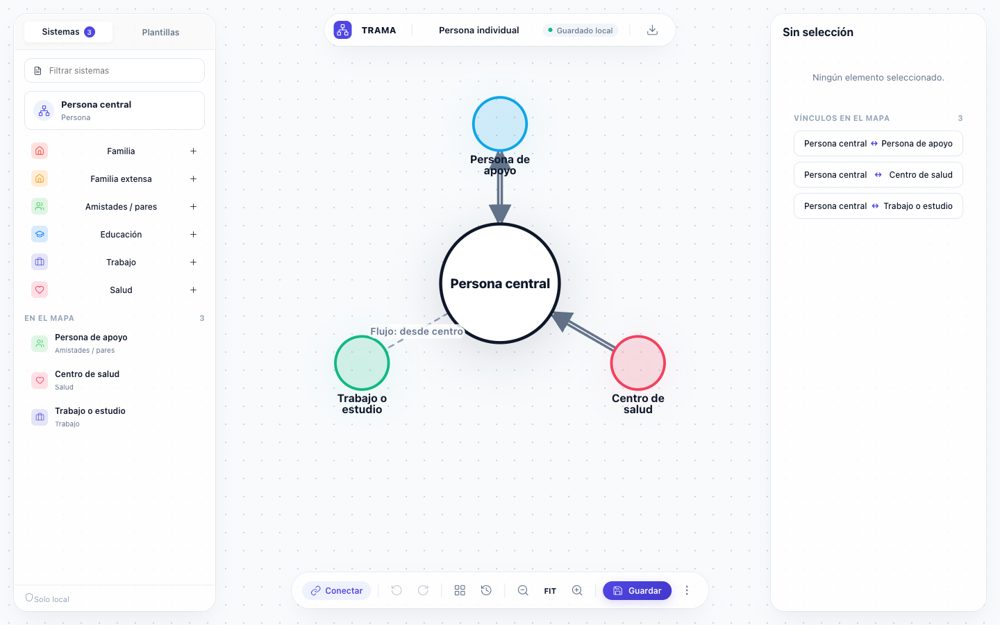
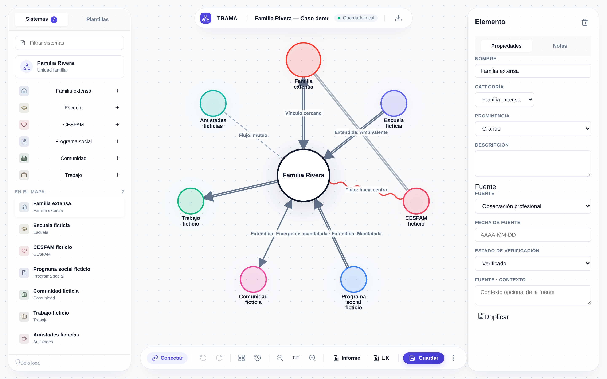
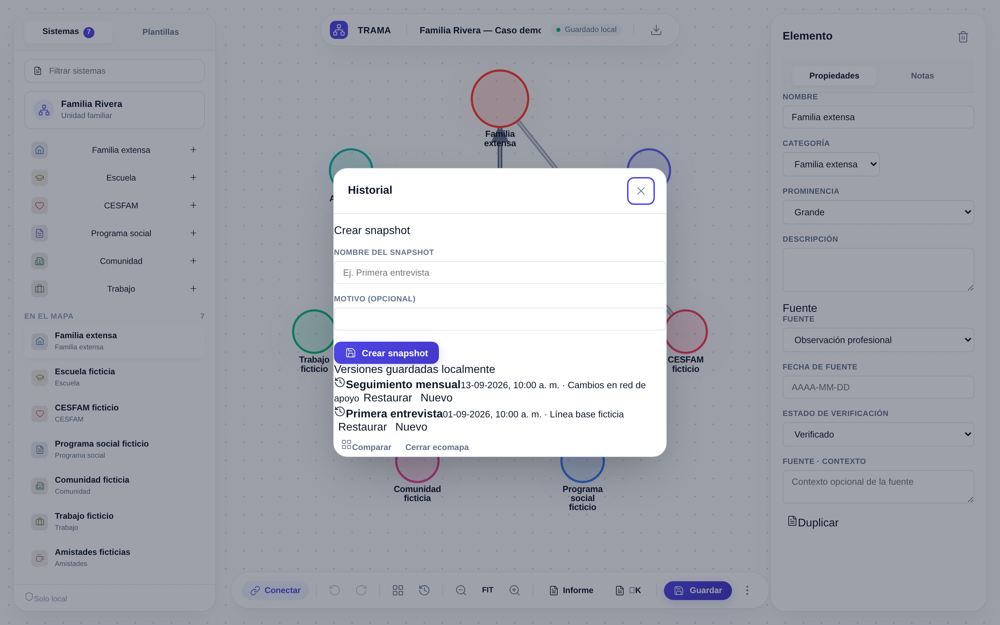
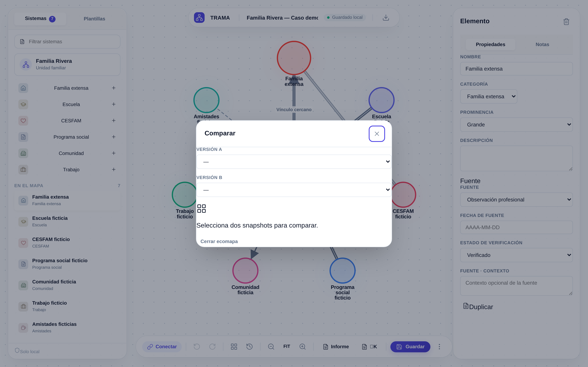
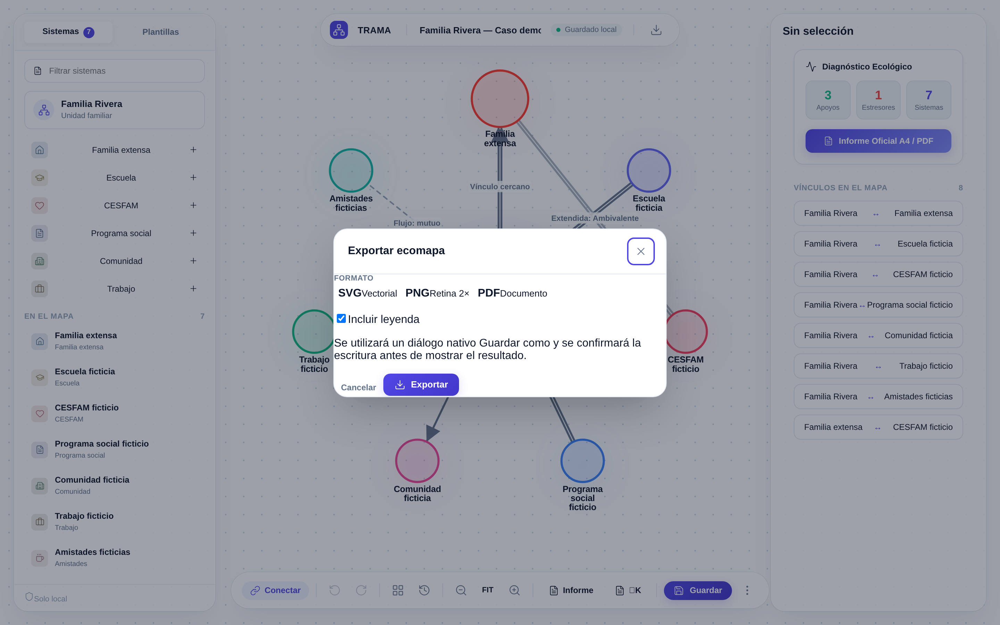
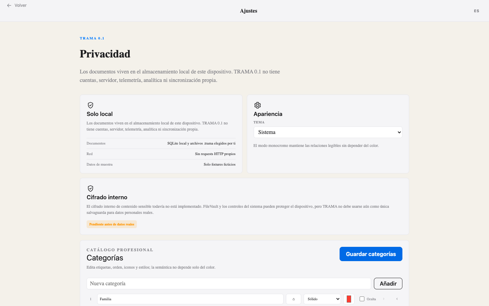

El problema que resuelve
Las herramientas genéricas de diagramación no entienden la semántica de las relaciones humanas. TRAMA ofrece un enfoque estructurado, con base académica y reproducible para mapear la red de sistemas alrededor de una persona o familia — respetando la confidencialidad de los datos del caso.
Funcionalidades
Relaciones semánticas
Tipos estándar y extendidos (fuerte, conflictiva, enredada, cortada, mandatada…) con estilo de línea distinto, no solo color. Legible en escala de grises y para daltonismo.
Flujo de energía
Cada relación lleva una dirección de flujo independiente: hacia el centro, desde el centro o mutua.
Snapshots y comparación
Captura versiones con nombre y fecha del caso y compara dos snapshots para ver exactamente qué cambió entre sesiones.
Procedencia
Cada nodo y conexión registra su tipo de fuente y estado de verificación, para una práctica defendible y basada en evidencia.
Exportación profesional
SVG vectorial, PNG a 2× y PDF orientado a A4, con leyenda opcional y consciente del tema.
Casos portables
Importa y exporta archivos .trama (contenedor ZIP abierto) para continuar el trabajo en otro dispositivo.
Privacidad
TRAMA es local-first: sin servidor, sin cuenta, sin telemetría, sin llamadas de red.
Los datos se guardan en una base SQLite local (o localStorage en navegador).
TRAMA no cifra los datos en reposo por sí mismo; la protección física depende del
cifrado del dispositivo (p. ej. FileVault). No es cifrado de extremo a extremo porque no hay red.
Las operaciones de archivo están restringidas a rutas elegidas por diálogo nativo, con validación
de traversal, allowlist de extensiones y límite de 50 MiB.
Capturas








Todas las capturas usan únicamente datos ficticios (caso demo "Familia Rivera").
Descarga y documentación
Binarios precompilados para macOS Apple Silicon en la página de Releases. Código fuente, arquitectura, modelo de datos y guía de contribución en GitHub.